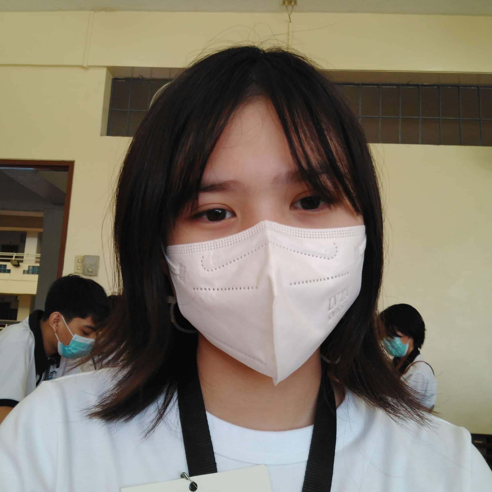
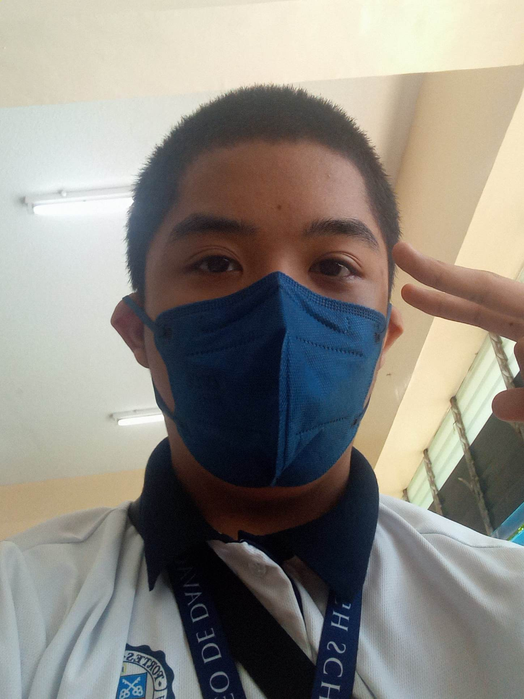
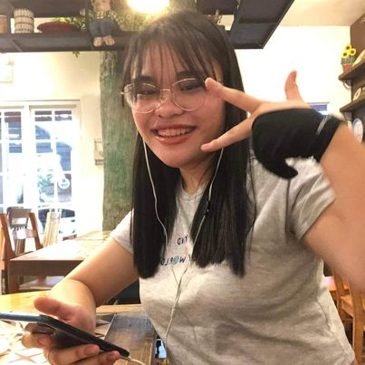

GROUPMATES

Pauline, The MVP of the group.
She always reminds us to do our tasks while also supporting us. She also helped us a lot in making the tasks while also telling us to take rest whenever we feel tired. She is the best leader we have and we
could not have asked for more. She also made the profiling webpage which she did an amazing job at making it

Caspian, the brains of our group, he singlehandedly almost did most of the research. He is like Mimir from norse mythology, everytime we
seek wisdom, he is always there to answer. He also helped us a lot in making our tasks as he always corrects our grammatical mistakes of information mistakes. He also
made the Background and project significance webpage, and I think the information put there is outstanding.

Annie, the Artist of the group.
She made all of the amazing artworks that was used in the Gallery webpage. She is also very fun and interactive person to talk to, she is proficient in english speaking,
bisaya speaking, and tagalog speaking. Whenever we need something like a background or banner, she will make like 5 of it just for the fun of it. I personally love her artworks,
and that goes to my groupmates as well. She also made the SIP as well, and I think the information and website is great overall.

So, I am Andy the creator of the homepage, and as well as the IT wizard of the group. I designed and reworked some of the website in order to make it look connected
to the other websites. I know i am handsome (char) and very very good at speaking bisaya. They think I am the most talkative when in reality I am not. I am and
introverted extrovert. I am also a very shy person uwu.

Ethan, the one who did the Gallery webpage, he is the most funny of the group and if you want some good laughs, you must come to him because he is really funny.
He is also pretty talkative in which I thought he was a quiet kid. He also helped us in creating this website, and also helped in in real life as well. Whenever
we need something a recharge in order to be happy, I will come to Ethan.